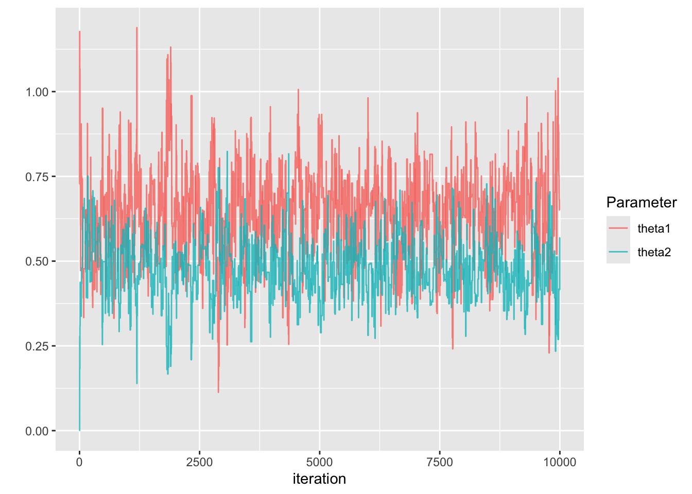

View libraries used in these notes
library(tidyverse)Dr. Alexander Fisher
As in the example from lab here, let \(y\) be the mercury concentration (ppm) of a bass fish and let \(x\) be the weight of the fish (kg). This time, our model will be:
\[ \begin{aligned} Y_i | \theta_1, \theta_2 &\sim N(\theta_1 + \theta_2 x_i, 1)\\ \theta_1, \theta_2 &\sim \text{ iid }N(0, 10) \end{aligned} \]
Sample from the posterior \(p(\theta_1, \theta_2 | y_1, \ldots, y_n, x_1, \ldots, x_n)\) using the Metropolis algorithm.
logLikelihood = function(theta1, theta2) {
mu = theta1 + (theta2 * x)
sum(dnorm(y, mu, 1, log = TRUE))
}
logPrior = function(theta1, theta2) {
dnorm(theta1, 0, sqrt(10), log = TRUE) +
dnorm(theta2, 0, sqrt(10), log = TRUE)
}
logPosterior = function(theta1, theta2) {
logLikelihood(theta1, theta2) + logPrior(theta1, theta2)
}
THETA1 = NULL
THETA2 = NULL
accept1 = 0
accept2 = 0
S = 10000
theta1_s = 0
theta2_s = 0
for (s in 1:S) {
## propose and update theta1
theta1_proposal = rnorm(1, mean = theta1_s, .5)
log.r = logPosterior(theta1_proposal, theta2_s) -
logPosterior(theta1_s, theta2_s)
if(log(runif(1)) < log.r) {
theta1_s = theta1_proposal
accept1 = accept1 + 1
}
THETA1 = c(THETA1, theta1_s)
## propose and update theta2
theta2_proposal = rnorm(1, mean = theta2_s, .5)
log.r = logPosterior(theta1_s, theta2_proposal) -
logPosterior(theta1_s, theta2_s)
if(log(runif(1)) < log.r) {
theta2_s = theta2_proposal
accept2 = accept2 + 1
}
THETA2 = c(THETA2, theta2_s)
}
| Parameter | Posterior Mean | 95% CI |
|---|---|---|
| \(\theta_1\) | 0.64 | (0.4, 0.88) |
| \(\theta_2\) | 0.48 | (0.32, 0.63) |
Compare to lm:
Call:
lm(formula = mercury ~ weight, data = bass)
Residuals:
Min 1Q Median 3Q Max
-1.71933 -0.41388 -0.09201 0.33615 2.14220
Coefficients:
Estimate Std. Error t value Pr(>|t|)
(Intercept) 0.63868 0.08035 7.948 2.56e-13 ***
weight 0.48181 0.05572 8.647 3.93e-15 ***
---
Signif. codes: 0 '***' 0.001 '**' 0.01 '*' 0.05 '.' 0.1 ' ' 1
Residual standard error: 0.6361 on 169 degrees of freedom
Multiple R-squared: 0.3067, Adjusted R-squared: 0.3026
F-statistic: 74.77 on 1 and 169 DF, p-value: 3.929e-15Under what conditions does Metropolis-Hastings MCMC work?
Ergodic theorem: If \(\{\theta^{(1)}, \theta^{(2)}, \ldots \}\) is an irreducible, aperiodic and recurrent Markov chain, then there is a unique probability distribution \(\pi\) such that as \(s \rightarrow \infty\),
\(Pr(\theta^{(s)} \in \mathcal{A}) \rightarrow \pi(\mathcal{A})\) for any set \(\mathcal{A}\);
\(\frac{1}{S} \sum g(\theta^{(s)}) \rightarrow \int g(x) \pi(x) dx\).
\(\pi\) is called the stationary distribution of the Markov chain because if \(\theta^{(s)} \sim \pi\) and \(\theta^{(s+1)}\) is generated from the Markov chain starting at \(\theta^{(s)}\), then \(Pr(\theta^{(s+1)} \in \mathcal{A}) = \pi(\mathcal{A})\).
A chain is reducible if the state-space can be divided into non-overlapping sets (due to some \(J\)). In practice, the proposal \(J(\theta^* | \theta^{(s)})\) needs to let us go from any value of \(\theta\) to any other, eventually.
We want our Markov chain to be aperiodic. A value \(\theta\) is said to be periodic with period \(k>1\) if it can only be visited every \(k\)th iteration. A Markov chain without periodic states is aperiodic.
A value \(\theta\) is recurrent if we are guaranteed to return to it eventually.
\[
\text{acf}_t(\boldsymbol{\phi}) =
\frac{\frac{1}{S - t} \sum_{s = 1}^{S-t} (\phi_s - \bar{\phi})(\phi_{s+t} - \bar{\phi})}
{\frac{1}{S-1} \sum_{s = 1}^S (\phi_s - \bar{\phi})^2}
\] where \(\boldsymbol{\phi}\) is a sequence of length \(S\) and \(\bar{\phi}\) is the mean of the sequence. Practically, we use acf function in R. Example:
Autocorrelations of series 'THETA1', by lag
0 1 2 3 4 5 6 7 8 9 10 11 12
1.000 0.890 0.808 0.746 0.695 0.652 0.614 0.578 0.541 0.507 0.475 0.445 0.422
13 14 15 16 17 18 19 20 21 22 23 24 25
0.401 0.382 0.364 0.346 0.325 0.303 0.282 0.266 0.250 0.235 0.223 0.212 0.202
26 27 28 29 30 31 32 33 34 35 36 37 38
0.192 0.185 0.177 0.169 0.163 0.160 0.157 0.154 0.148 0.141 0.136 0.131 0.129
39 40
0.123 0.115 The higher the autocorrelation, the more samples we need to obtain a given level of precision for our approximation. One way to state how precise our approximation is, is with effective sample size.
coda::effectiveSize() function to compute. Example:More precisely, the effective sample size (ESS) is the value \(S_{eff}\) such that
\[ Var_{MCMC}[\bar{\phi}] = \frac{Var[\phi]}{S_{eff}}. \] In words, it’s the number of independent Monte Carlo samples necessary to give the same precision as the MCMC samples. For comparison, recall \(Var_{MC}[\bar{\phi}] = Var[\phi]/S\)
Traceplots are a great way to visually inspect whether a chain has converged, or achieved stationarity. In the traceplot from the previous lecture, we can see that samples from the beginning of the chain look very different than samples at the end for delta = 0.1.
\(^*\) recall that probability is really a volume in high dimensions of parameter space, and so it is not enough for a pdf to evaluate to a high value, there must also be sufficient volume.